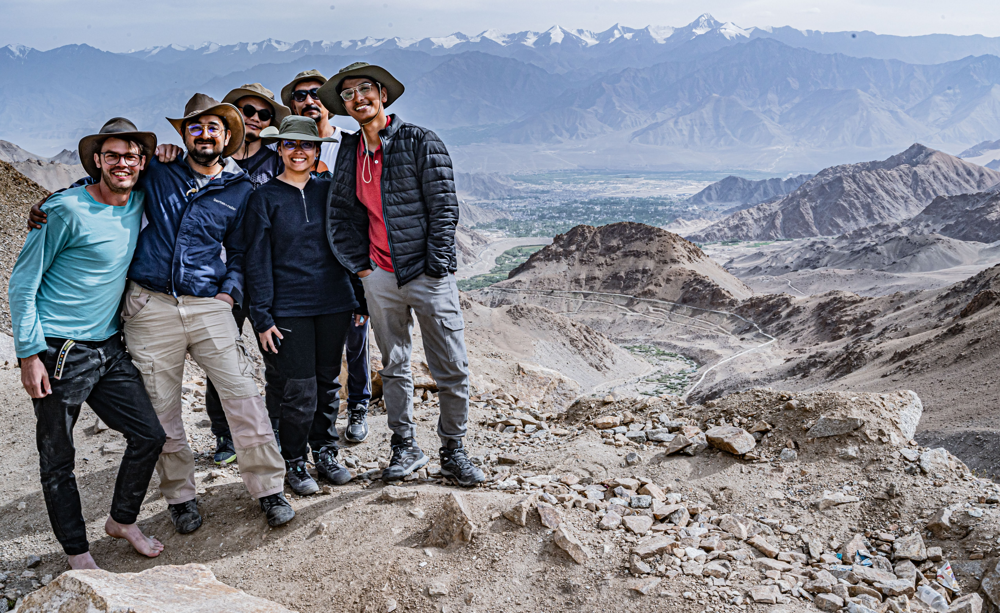
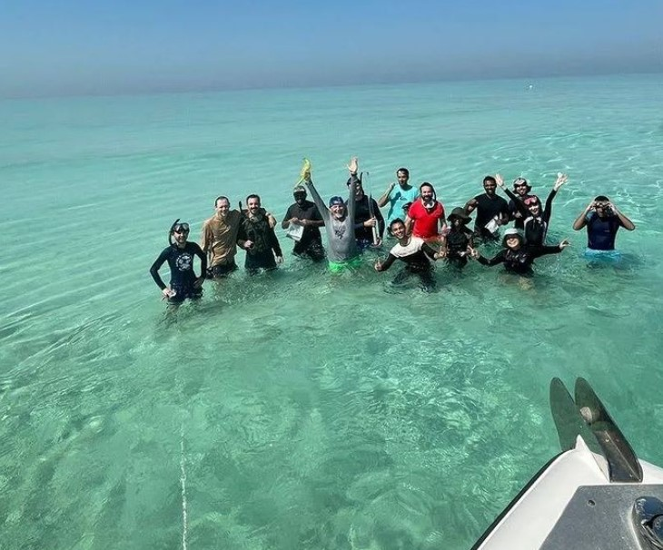

Field Work

Expedition 389 Hawaiian Drowned Reefs
August 25, 2023
The International Ocean Discovery Program (IODP) continues its remarkable journey to explore Earth's history through marine sediments and rocks. Expedition 389 is dedicated to the study of the Hawaiian drowned reefs. These submerged coral formations hold invaluable insights into sea level fluctuations and climatic variations spanning the past half a million years.

Exploring the Enchanting Landscapes: A Research Trip in Ladakh
June, 2023 | Ladakh, India

Unearthing a Geological Solution: Exploring Deccan Basalt in SW Maharashtra for Carbon Capture
May 2023 | Koyna, Maharashtra, India
Embarking on a field trip in the picturesque region of Koyna, Maharashtra, our expedition was not just a journey of discovery but an exploration of a potential game-changer in the fight against climate change. The focus? Deccan basalt - a geological wonder that could hold the key to effective carbon sequestration. Carbon sequestration is a natural or artificial process that captures and stores carbon dioxide (CO2) from the atmosphere, helping to combat the rise of greenhouse gases and global warming. This field report delves into our findings and insights from this captivating journey.

South Andaman Research Field Trip
April, 2023 | South Andaman, India
The composition of the Andaman Islands includes ultramafic mafic ophiolite rocks, flysch sediments, conglomeratic rocks, and younger sedimentary rocks like shale and limestones. Additionally, the periphery of the islands contains late Quaternary and Holocene rocks, as well as modern sediments, which are continuously produced and deposited along the coast and shallow shelf. Among these geological formations, carbonate rocks and sediments are a significant component. Our focus lies in studying these modern carbonate rocks and sediments, aiming to gain a deeper understanding of the evolution of the late Quaternary carbonate system along the islands.

Coral Reef: Past-Present-Future
March, 2023 | Lakshadweep, India
Coral reefs are underwater ecosystems characterized by reef-building corals. Reefs are formed of colonies of coral polyps held together by calcium carbonate. Understanding them is significant from the perspective of carbonate sedimentology as well as climate studies. Corals are one of the major carbonate factories and are sensitive to climate change. The purpose of the short course was to understand the past present and future aspects of Coral reefs and gain hand-on training in Lakshadweep.

Rameshwaram Field Work
Dec, 2022 | Rameshwaram, India
A Research Trip in Ladakh
July, 2022 | Ladakh, India
Field work Abu Dhabi
2022 | Abu Dhabi (United Arab Emirates)